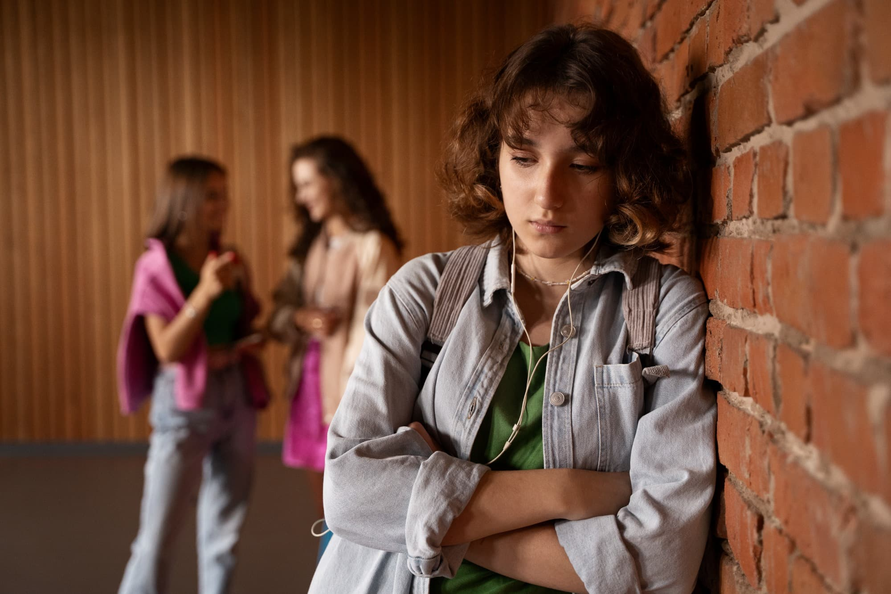
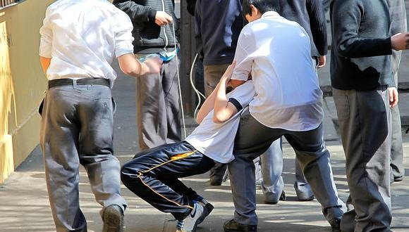
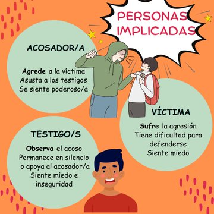
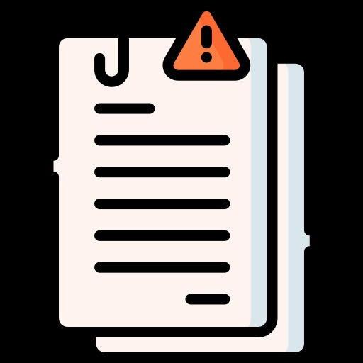
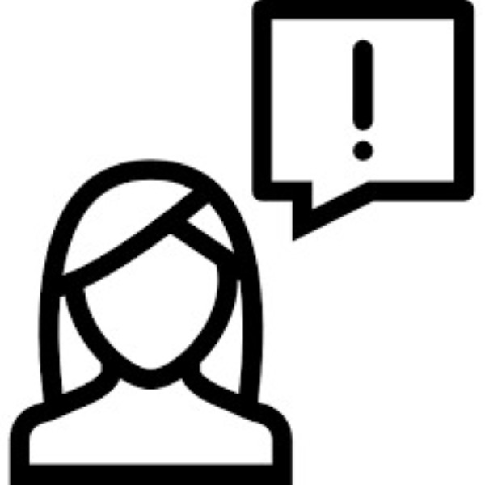

Si eres testigo
Debes saber que el Minedu supervisará que los protocolos de atención se realicen en el tiempo oportuno y tomando en cuenta la importancia y sensibilidad del caso.


El bullying o acoso escolar es una forma de violencia que puede causar daños profundos en quienes lo sufren. Combatirlo requiere la participación activa de toda la comunidad educativa: docentes, padres y estudiantes. Aquí te explicamos cómo actuar desde cada rol:
Los docentes tienen un papel fundamental en la detección y prevención del bullying. No basta con intervenir en casos extremos; también es importante estar alerta ante señales sutiles.
¿Qué hacer?
• Observa con atención el comportamiento de tus alumnos, especialmente los cambios de actitud, aislamiento o retraimiento.
• No minimices comentarios como "solo es una broma" o "son cosas de niños". Estos pueden ser indicadores de acoso.
• Promueve un ambiente de respeto, inclusión y diálogo en el aula.
• Establece normas claras de convivencia y hazlas cumplir con coherencia.
• Ofrece espacios de conversación donde los alumnos puedan expresar sus inquietudes sin temor a ser juzgados.
• Informa y trabaja en conjunto con las familias y el equipo directivo cuando identifiques una situación de bullying..
El apoyo familiar es esencial para que un niño o adolescente se sienta seguro y comprendido. La forma en que los padres reaccionan puede marcar la diferencia.
¿Qué hacer?
• Escucha a tu hijo con empatía y sin interrumpir. Hazle saber que no está solo.
• No minimices el problema ni le digas que "ignore" lo que le hacen.
• Refuerza su autoestima y acompáñalo en la búsqueda de soluciones.
• Comunícate con la escuela para informar la situación y trabajar en conjunto.
• Si es necesario, busca apoyo profesional para tu hijo y para ti como guía en el proceso.
Todos los estudiantes tienen el derecho de aprender en un entorno libre de violencia. Ya seas víctima o testigo de bullying, tu voz es importante.
¿Qué hacer?
• Si eres víctima, habla con alguien de confianza: un docente, tus padres o un orientador escolar.
• No te sientas culpable. Nadie merece ser maltratado.
• Si presencias un caso de acoso, no lo ignores ni te conviertas en cómplice. Puedes intervenir de forma segura o buscar ayuda inmediata.
• Sé parte del cambio: promueve la empatía y el respeto entre tus compañeros.

• Escucha lo que tiene para decir, sin interrumpir ni criticar de inmediato.
• Evita los castigos impulsivos: enfócate en comprender lo que lo motivó
• Escucha activamente. Muchas veces, detrás de una conducta agresiva hay inseguridades, problemas emocionales, dificultades en casa o en la escuela.
• Pregunta con calma: ¿Qué ocurrió?, ¿Cómo te sentiste?, ¿Por qué lo hiciste?
• No justifiques su conducta, pero sí busca entender qué la está generando.
• Enséñale a ponerse en el lugar del otro. Fomenta la empatía hablando sobre cómo se sintió la otra persona.
• Refuerza los valores del respeto, la tolerancia y la responsabilidad.
El bullyng puede estar relacionado con:
• Problemas de autoestima
• Dificultades familiares o escolares
• Falta de habilidades para manejar emociones
Un orientador, psicólogo o trabajador social puede:
• Ayudar a tu hijo a regular su conducta
• Detectar problemas emocionales de fondo
• Guiarte a ti como madre, padre o tutor en el proceso
• Sé un modelo a seguir. Los niños aprenden del ejemplo: la forma en que tratas a los demás impacta directamente en su conducta.
• Refuerza valores como la empatía, la solidaridad y el autocontrol.
• Establece límites claros en casa, con consecuencias firmes pero justas..
• Comparte tiempo con tu hij@: hablar, jugar y escucharlo fortalece su bienestar emocional.
Combatir el bullying es responsabilidad de todos. Si conoces o sospechas de un caso de acoso escolar, no guardes silencio. Existen canales oficiales para reportar estas situaciones, tanto en colegios públicos como privados.
Si el caso ocurre en un colegio particular
Puedes presentar tu denuncia ante el INDECOPI, la entidad encargada de supervisar los servicios educativos privados.
Correo directo:
🌐sacreclamo@indecopi.gob.pe
Correo directo:
🌐www.indecopi.gob.pe
Dirígete a la sección "Servicios Educativos" y sigue los pasos para registrar tu caso.
Si el caso ocurre en un colegio particular
Debes reportarlo a través del sistema oficial del Ministerio de Educación del Perú:
Plataforma SÍSEVE:
🌐 https://siseve.minedu.gob.pe/web/
➡ Este portal permite reportar casos de violencia escolar de forma confidencial y segura.
🔹 Puedes denunciar:
• Bullying físico, verbal o psicológico
• Discriminación
• Agresiones sexuales
• Violencia entre estudiantes o de docentes hacia alumnos
🔒 ¿Es confidencial?
¡Sí! Puedes realizar la denuncia de manera anónima. Lo más importante es actuar a tiempo para proteger a la víctima y frenar cualquier forma de violencia.
🛡️ Tu denuncia puede marcar la diferencia.
Proteger los derechos de los estudiantes es construir una escuela segura, inclusiva y libre de violencia para todos.
Debes saber que el Minedu supervisará que los protocolos de atención se realicen en el tiempo oportuno y tomando en cuenta la importancia y sensibilidad del caso.
Debes saber que no tienes ninguna culpa en esta situación y que el reporte es totalmente confidencial.

Se generará un código que llegará al correo electrónico registrado en el portal, con el cual podrás hacer seguimiento al caso hasta que se cierre.

Este tipo de bullying es uno de los más comunes. Implica golpes, empujones, patadas, arañazos y cualquier tipo de agresión física hacia la víctima. En ocasiones se le añade robo o daño a sus pertenencias.
En casos más graves, el bullying físico deriva en heridas permanentes e incluso en la muerte.
En el bullying verbal, los agresores utilizan palabras hirientes e insultos para dañar a la víctima. Puede ser directo, como bromas ofensivas, o indirecto, como rumores o apodos crueles.
Este tipo de acoso impacta profundamente la salud mental de la víctima.
Busca dañar la autoestima y provocar miedo constante. Se manifiesta a través de intimidación, amenazas o chantajes. Si se combina con maltrato físico, el daño puede ser irreversible.
Combatirlo es una prioridad para proteger la salud mental del estudiante.
Incluye comentarios, gestos o actos sexuales no deseados. Puede comenzar con bromas inapropiadas y escalar hasta compartir fotos íntimas o agresión sexual.
También abarca ataques verbales y físicos por orientación sexual.
Aíslan a la víctima socialmente: no la incluyen en juegos, trabajos en grupo o chats escolares. La persona se siente invisible e insignificante.
Los docentes deben estar atentos a estas señales para intervenir a tiempo.
Se produce a través de redes sociales y plataformas digitales. Incluye insultos, memes ofensivos, rumores en línea o difusión de contenido privado sin permiso.
La tecnología debe usarse con responsabilidad para evitar este tipo de acoso.